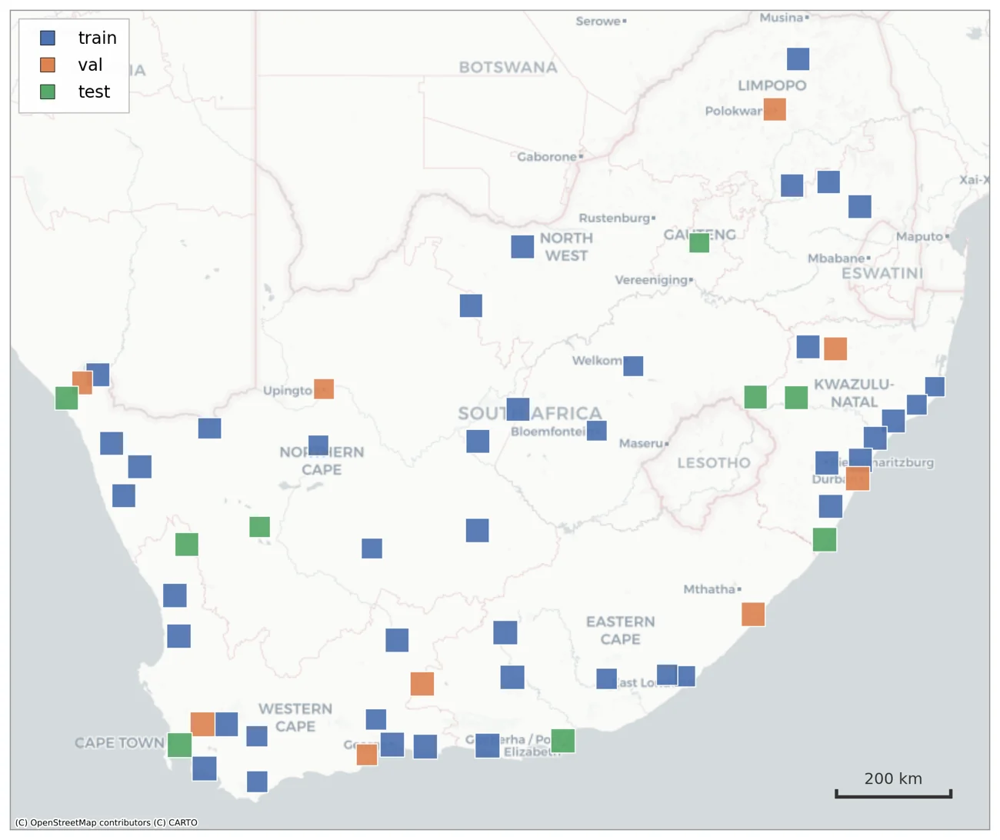
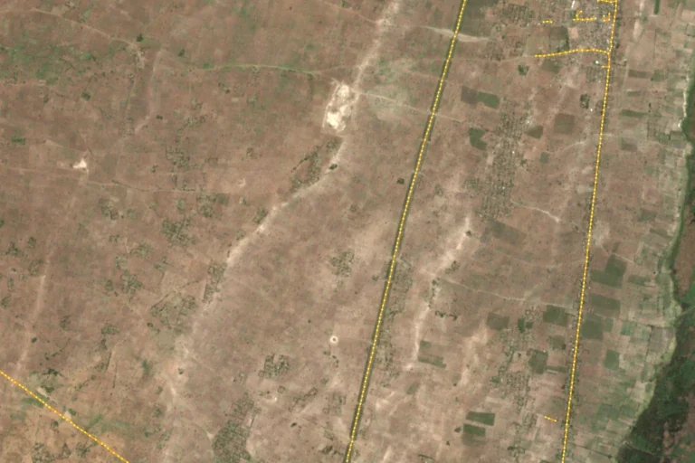
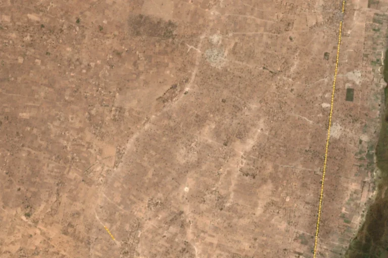

Model-centric
Catherine Li
Adapting the TerraMind geospatial foundation model
Compares five decoders and LoRA fine-tuning for TerraMind on multi-modal Sentinel-1/2 input, benchmarked against U-Net and D-LinkNet.
More DetailsDeep learning for road network extraction from open-access, medium-resolution Sentinel satellite imagery across South Africa
Supervised by Patrick Marais and Jonathan Shock
Department of Computer Science, University of Cape Town
We develop AI tools to monitor how road networks change over time, based on satellite imagery. This supports urban planning and assessing the environmental impact of road networks. Deep learning can extract road networks from satellite imagery at scale, but relies on costly high-resolution imagery, and licensing often restricts model training. Freely available Sentinel satellite imagery is a promising alternative, which covers the globe every few days. However, this data is relatively low resolution, which makes it challenging to extract fine-grained and thin road structures.
InstaRoad explores road network extraction with 10 m Sentinel-1 (radar) and Sentinel-2 (optical) imagery across South Africa. We built a new dataset, ROSA, that spans all nine biomes and urban, peri-urban and rural regions, and used it to explore three complementary approaches: adapting a geospatial foundation model, graph-based road extraction, and super-resolution. The models can be integrated into an end-to-end geospatial web application framework, such as InstaGeo.
The Problem: 10m spatial resolution, results in 1-2 pixel or less than a pixel wide roads.
ROSA: Roads of South Africa dataset
Cloud-free Sentinel-1/2 mosaics with CD:NGI road labels across 9 biomes and urban, peri-urban and rural regions.
Model-centric
Adapting the TerraMind geospatial foundation model
Compares five decoders and LoRA fine-tuning for TerraMind on multi-modal Sentinel-1/2 input, benchmarked against U-Net and D-LinkNet.
More DetailsGraph extraction
Improving SAM-Road for road-graph extraction
Adapts SAM-Road to multi-band 10 m imagery with new backbones, CNN segmentation components and skeletonisation. Built the ROSA pipeline and the InstaGeo integration.
More DetailsData-centric
Task-driven super-resolution for road segmentation
Fine-tunes pretrained super-resolution models with the road-segmentation loss, and tests whether a high-capacity segmenter is needed at all.
More DetailsDeployment
InstaGeo integration
Fetch imagery, run road extraction and view the predicted road graph on a web map, end to end.

ROSA pairs cloud-free 2020 Sentinel-1/2 mosaics, composited in Google Earth Engine, with road centrelines from South Africa's Chief Directorate: National Geo-spatial Information (CD:NGI). Urban zones were hand-picked in every biome; peri-urban and rural zones were drawn by stratified random sampling over biome, urbanisation and road presence. The test split was manually checked against high-resolution basemaps.


2015 2025Our road-extraction models can run end-to-end on a web application. We utilised the GlobalUrbanMapper GEE data engine as an imagery source, so the app fetches cloud-free Sentinel mosaics. The predicted roads are overlayed on the imagery in a web map. This allows for practical applications such as detecting changes in road networks over time.
External, non-permanent link: the hosted demo may be taken offline after the project ends.
| Member | Final paper | Literature review | Source code |
|---|---|---|---|
| Catherine Li | PDF · 10.6 MB | PDF · 469 KB | ZIP · 13.9 MB |
| Kelvin Wei | PDF · 10.6 MB | PDF · 610 KB | ZIP · 14.6 MB |
| Jing Yeh | PDF · 21.1 MB | PDF · 431 KB | TAR · 20.8 MB |
We thank our supervisors, Prof. Patrick Marais and Prof. Jonathan Shock, for their guidance and detailed feedback; the Shock Lab computer vision reading group; and Lavinia Perumal (African Climate and Development Initiative, UCT) for context on the impact of roads.